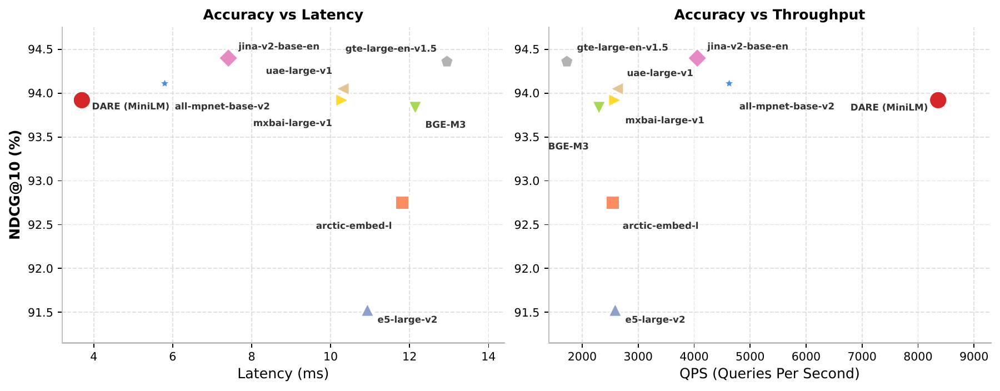
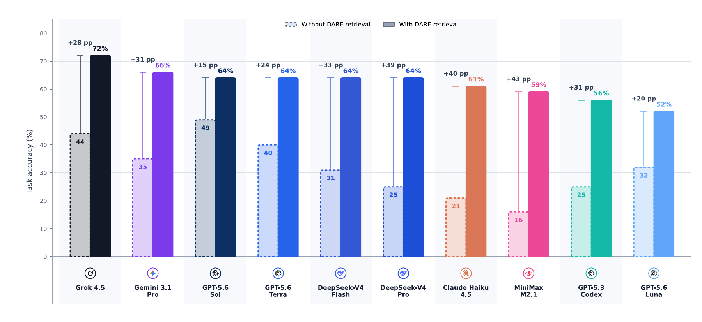

Experimental Results
Table 1: Retrieval on 32,764 queries against 8,191 R functions. Each entry shows the score after DARE fine-tuning, with the same backbone's score before fine-tuning in parentheses. All values are percentages.
| Backbone | Parameters | NDCG@10 | MRR@10 | Recall@10 | Recall@1 |
|---|---|---|---|---|---|
| Jina Embeddings v2 Base EN | 137M | 94.40 (74.29) | 93.00 (69.65) | 98.61 (88.73) | 89.39 (59.69) |
| GTE Large EN v1.5 | 434M | 94.36 (66.39) | 92.98 (61.22) | 98.53 (82.57) | 89.42 (50.40) |
| All-MPNet-Base-v2 | 110M | 94.11 (66.06) | 92.57 (60.57) | 98.75 (83.30) | 88.59 (49.37) |
| UAE Large v1 | 335M | 94.05 (70.66) | 92.58 (65.56) | 98.46 (86.58) | 88.81 (54.79) |
| MXBAI Embed Large v1 | 335M | 93.92 (70.68) | 92.45 (65.65) | 98.38 (86.39) | 88.64 (55.08) |
| BGE-M3 | 568M | 93.83 (73.08) | 92.30 (68.43) | 98.45 (87.58) | 88.37 (58.47) |
| Snowflake Arctic Embed L | 335M | 92.75 (79.32) | 90.91 (75.10) | 98.31 (92.35) | 86.12 (65.49) |
| E5 Large v2 | 335M | 91.53 (75.13) | 89.26 (70.86) | 98.38 (88.38) | 83.46 (61.52) |
| MiniLM-L6-v2 | 23M | 93.92 (61.27) | 92.33 (55.53) | 98.71 (79.36) | 88.23 (44.12) |

Figure 5: Retrieval accuracy versus latency and throughput. On the reported benchmark, the MiniLM-based retriever reaches 93.92% NDCG@10 at 3.70 ms per query and 8,359 queries per second in batched encoding.
Downstream Agent Performance
On the same 100 RStatBench tasks, all ten LLMs improve with DARE retrieval under the same RCodingAgent configuration. Mean accuracy rises from 31.8% to 62.2%, a gain of 30.4 percentage points. Grok 4.5 achieves the highest accuracy with retrieval (72%), while MiniMax M2.1 shows the largest increase (16% to 59%).

Figure 6: End-to-end task accuracy with and without DARE retrieval on RStatBench.
View task accuracy by model
| Model | Without DARE | With DARE |
|---|---|---|
| Grok 4.5 | 44% | 72% |
| Gemini 3.1 Pro | 35% | 66% |
| GPT-5.6 Sol | 49% | 64% |
| GPT-5.6 Terra | 40% | 64% |
| DeepSeek V4 Flash | 31% | 64% |
| DeepSeek V4 Pro | 25% | 64% |
| Claude Haiku 4.5 | 21% | 61% |
| MiniMax M2.1 | 16% | 59% |
| GPT-5.3 Codex | 25% | 56% |
| GPT-5.6 Luna | 32% | 52% |
| Mean | 31.8% | 62.2% |